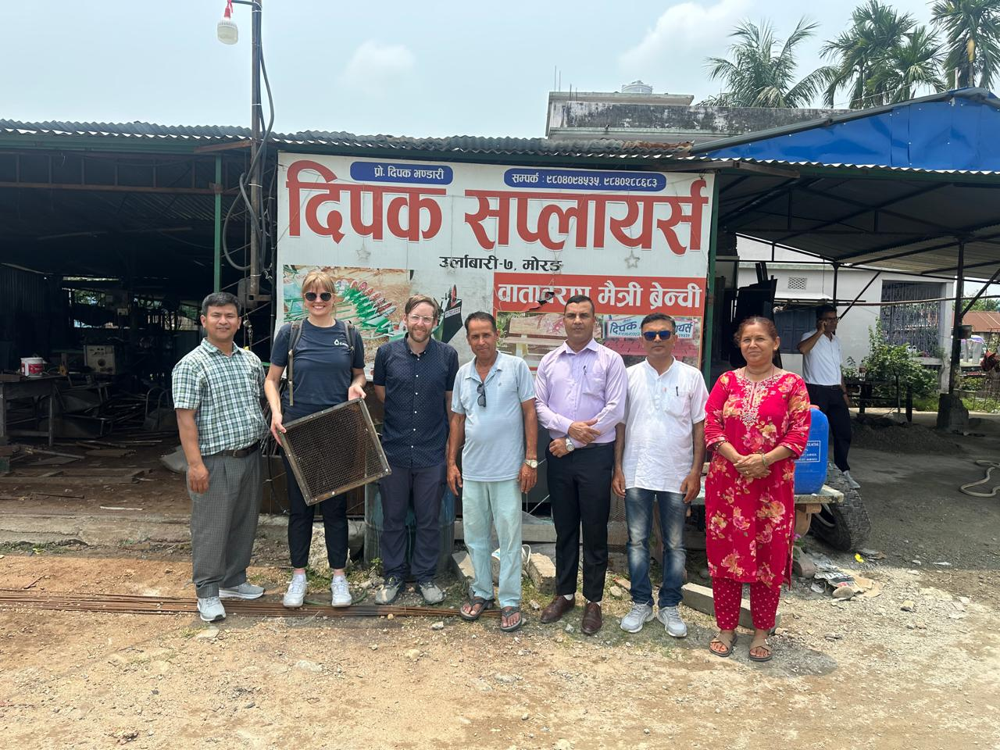

Working togetherBio-Sand Filter representatives connect in Nepal
Representatives connected with Dipak Suppliers to exchange practical knowledge about Bio-Sand Filter production, use, and community impact in Nepal.
Nepal Bio-Sand Filter representatives
ENPHO and CAWST participation
Local production and field experience
Explore Bio-Sand Filters